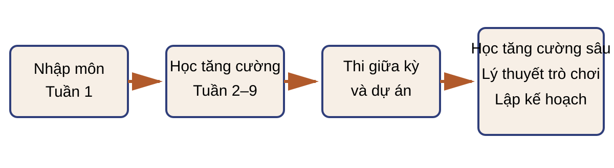

Bài 1
Giới thiệu Học tăng cường
Tác tử và môi trường; tín hiệu học; phần thưởng trễ; chính sách, hàm giá trị và mô hình; thăm dò, khai thác; Tic-tac-toe.
Học kỳ 1 · 2026–2027
Danh mục bài giảng RevealJS, ghi chú tự học và bài thực hành, từ giao diện tác tử–môi trường đến học tăng cường sâu và đa tác tử.

Tác tử và môi trường; tín hiệu học; phần thưởng trễ; chính sách, hàm giá trị và mô hình; thăm dò, khai thác; Tic-tac-toe.
Phân tích tương tác, thông tin, chính sách, giá trị và mô hình môi trường qua bài toán mê cung.
Từ robot thu gom lon đến mô hình quyết định Markov, suy diễn Bellman và tính giá trị của một chính sách.
Đánh giá và cải thiện chính sách; lặp chính sách, lặp giá trị; quy hoạch động bất đồng bộ, kiểm chứng sai số và giới hạn của mô hình dạng bảng.
Monte Carlo, sai phân thời gian TD(0) và so sánh dự đoán theo chính sách qua lựa chọn mẫu, bước học, giả thiết và dữ liệu hữu hạn.
Giá trị hành động và thăm dò; điều khiển Monte Carlo, Sarsa và Q-learning dạng bảng; mục tiêu cập nhật và điều kiện bảo đảm hội tụ.
Hàm giá trị tuyến tính theo đặc trưng; gradient Monte Carlo và bán gradient sai phân thời gian TD(0), điểm cố định Bellman chiếu; Sarsa, Q-learning và bộ ba bất ổn.